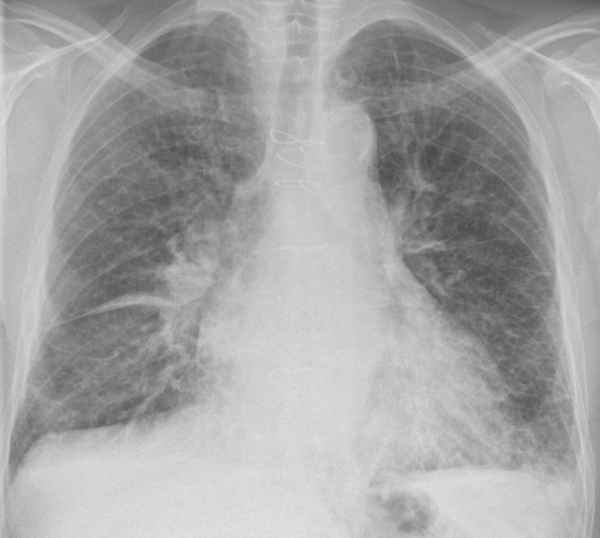
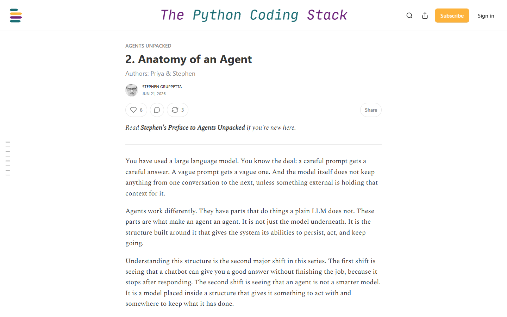
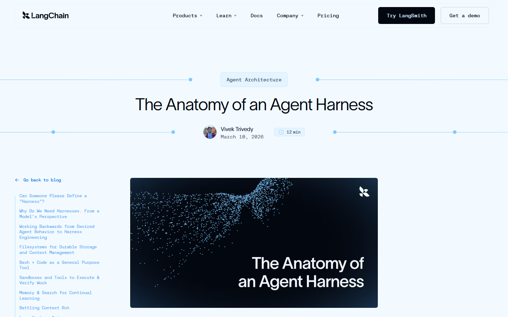
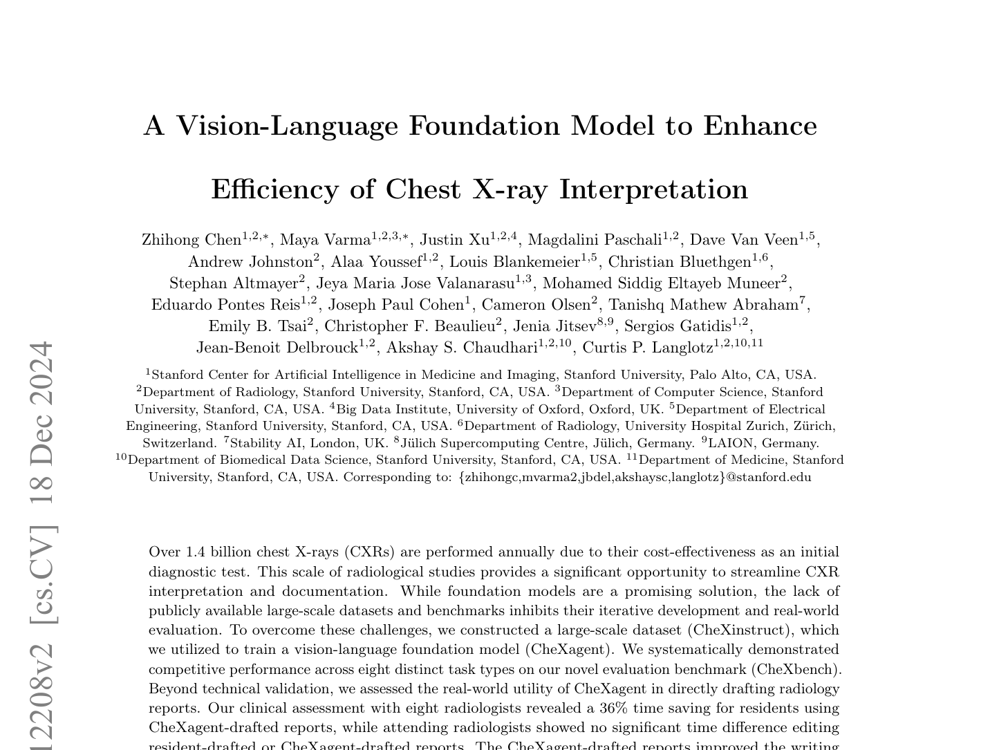
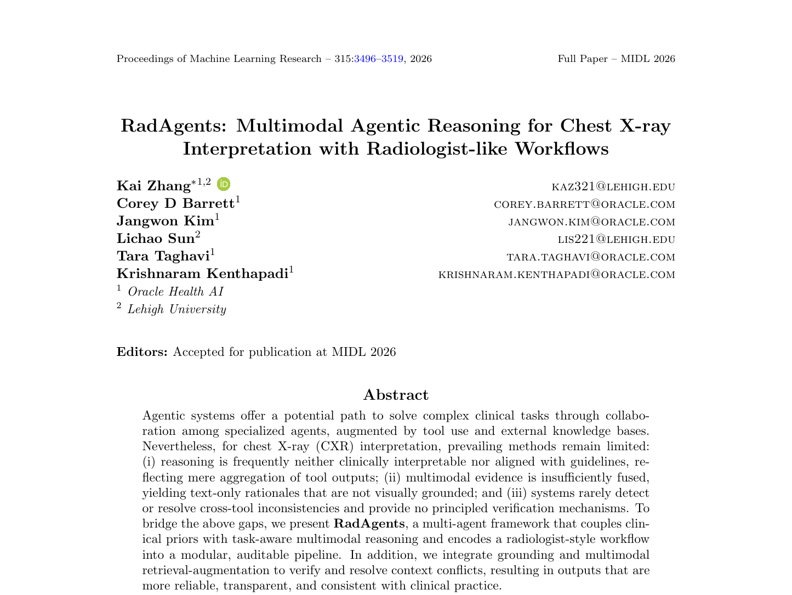
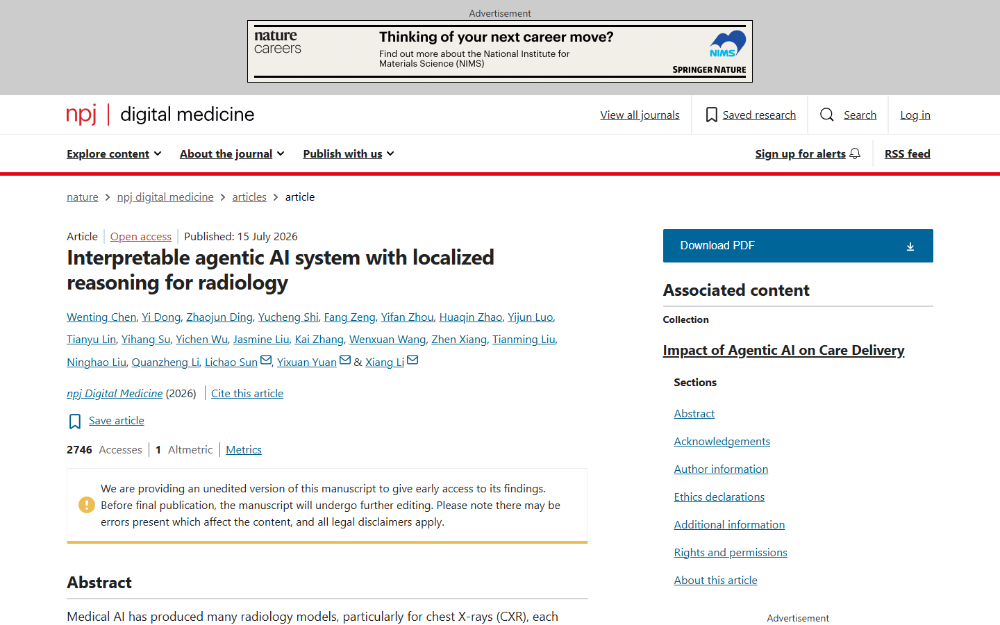
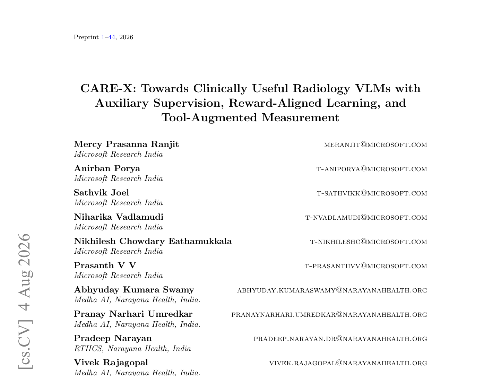

TEB | The core idea
An agent is not a better model. It is a system that pursues a goal.
Chatbot
produces an answer
versus
Agent
produces an outcome
The difference is the loop: the system chooses actions, observes the result, and only then decides whether it is done.

OBSERVE → DECIDE → ACT → VERIFY → STOP
goal + model + instructions + tools + state + stop condition
Concept source: Gruppetta, Anatomy of an Agent (2026). Image: Wikimedia Commons.
01
TEB | Anatomy of an agent
The loop turns an answer into work

Operational formula
AGENT = MODEL
+ INSTRUCTIONS
+ MEMORY / STATE
+ TOOLS
+ EXECUTION LOOP
+ MEMORY / STATE
+ TOOLS
+ EXECUTION LOOP
Without repeat, this is a well-instructed call. It is not goal pursuit.
Source: Gruppetta, Anatomy of an Agent, 21 Jun 2026.
02
TEB | Model + harness
The harness makes the loop operational

AGENT = MODEL + HARNESS
The model provides capability. The harness defines observable behavior.
CONTEXTprompts, memory, retrieval
ACTIONtools, code, browser, filesystem
CONTROLorchestration, permissions, logs, limits
Source: Trivedy, The Anatomy of an Agent Harness, LangChain, 10 Mar 2026.
03
TEB | Paper for discussion
CheXagent: ‘agent’ in the name does not prove agentic behavior

Preprint | arXiv 2401.12208
It is a multimodal foundation model for chest X-rays.
- Evaluates eight task types in CheXbench.
- Tests report drafts with eight radiologists.
- The abstract does not describe a tool-selection and verification loop.
Editorial questionWhere is the iterative action mechanism?
Chen et al. arXiv:2401.12208. Slide status: preprint.
04
TEB | Paper for discussion
MedRAX: the agent orchestrates specialized tools
ICML 2025 | Peer reviewed
The LLM selects and sequences chest X-ray analysis models.
- Integrates specialized tools and multimodal models.
- Acts on complex queries without additional training.
- ChestAgentBench: 2,500 queries across seven categories.
Editorial questionDoes the evaluation measure the system or only the final answer?
Fallahpour et al. ICML 2025; PMLR 267:15661-15676.
05
TEB | Paper for discussion
RadAgents: radiologist-like decomposition improves auditability

MIDL 2026 | Peer reviewed
Seven agents encode a radiologist-like workflow.
- Five ABCDE subagents, plus Orchestrator and Synthesizer.
- Integrates grounding, retrieval, and conflict resolution.
- Keeps intermediate artifacts for inspection of the trajectory.
Editorial questionDoes traceability explain, or merely narrate?
Zhang et al. MIDL 2026; PMLR 315:3496-3519.
06
TEB | Paper for discussion
RadFabric: many models, one orchestration protocol

npj Digital Medicine 2026 | Peer reviewed
The system integrates heterogeneous and potentially conflicting outputs.
- Orchestrates 14 chest X-ray analytical models and two VLMs.
- One agent anchors findings to anatomy.
- Another agent synthesizes signals into a single output.
Editorial questionHow should each component and the composed error be validated?
Chen et al. npj Digital Medicine, 15 Jul 2026. DOI 10.1038/s41746-026-02994-8.
07
TEB | Paper for discussion
CARE-X: tool use in one component does not make the whole system agentic

Preprint | 4 Aug 2026
The core is a VLM with auxiliary supervision and reward alignment.
- Classification and grounding heads complement generation.
- Optimization uses task-specific rewards.
- Measurement tools appear separately in measurement-dependent tasks.
Editorial questionWhat was evaluated: the VLM, tool calling, or the pipeline?
Ranjit et al. CARE-X. arXiv:2608.03890. Slide status: preprint.
08
TEB | Closing
The editorial question has changed: what did the system do, with which tools, and under what limits?
Research frontiers
01trajectory benchmarks, not only final answers
02composed error and tool-selection failures
03human–agent interaction and escalation
04external, prospective, workflow-aware validation
DECISIONwho chooses the next step?
TOOLSwhat can act, and with which permissions?
STATEwhat persists across steps and cases?
STOPhow does the loop end or escalate?
EVALUATIONtrajectory, safety, cost, and utility?
The model provides capability. The harness defines behavior.
Synthesis for editorial discussion. CLAIM 2024: DOI 10.1148/ryai.240300.
09